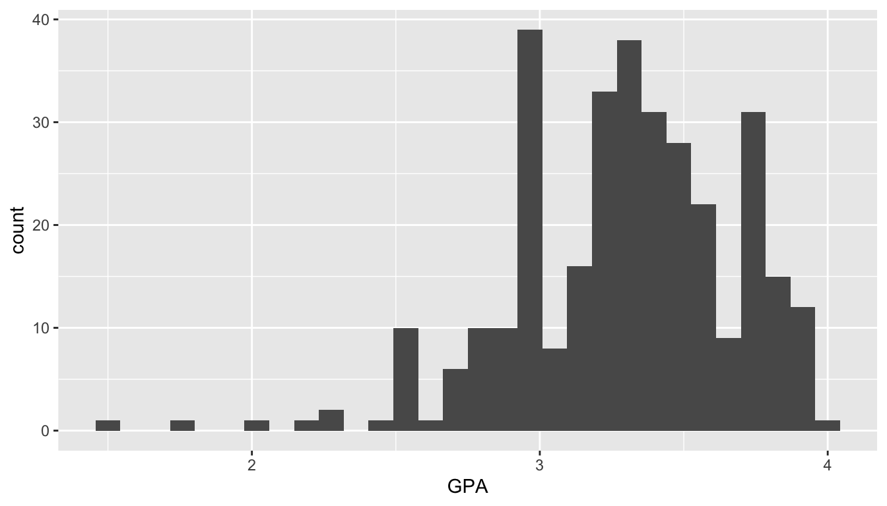
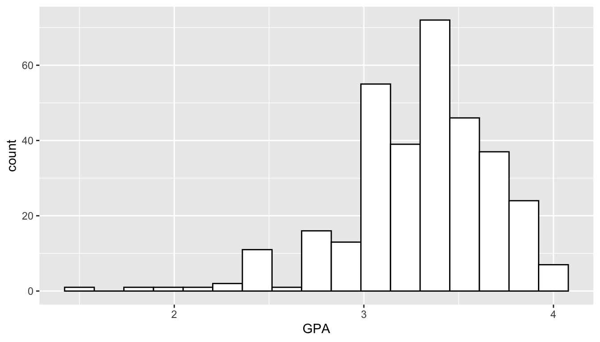
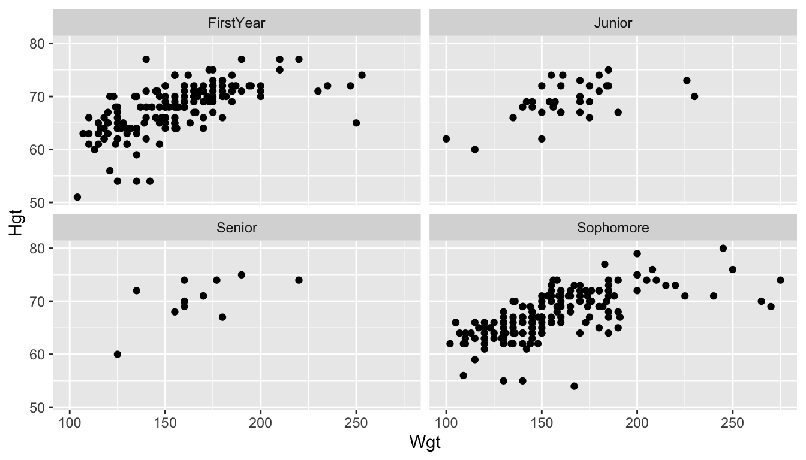

Use the ggplot2 package to make exploratory plots from STAT 113 of a single quantitative variable, two quantitative variables, a quantitative and a categorical variable, a single categorical variable, and two categorical variables.
Use the plots produced to answer questions about the Presidential election data set and the Fitness data set.
Further practice running code in R.
2.1 Introduction and Basic Terminology
We will begin our data science journey with plotting in the ggplot2 package. We are starting with plotting for a couple of reasons:
Plotting is cool! We get to see an immediate result of our coding efforts in the form of a nice-to-look-at plot.
In an exploratory data analysis, you would typically start by making plots of your data.
Plotting can lead us to ask and subsequently investigate interesting questions, as we will see in our first example.
We will first use a data set on the 2000 United States Presidential election between former President George Bush and Al Gore obtained from http://www.econometrics.com/intro/votes.htm. For those unfamiliar with U.S. political elections, it is enough to know that each state is allocated a certain number of “electoral votes” for the president: states award all of their electoral votes to the candidate that receives the most ballots in that state. You can read more about this strange system on Wikipedia.
Florida is typically a highly-contentious “battleground” state. The data set that we have has the following variables, recorded for each of the 67 counties in Florida:
Gore, the number of people who voted for Al Gore in 2000
Bush, the number of people who voted for George Bush in 2000
Buchanan, the number of people who voted for the third-party candidate Buchanan
Nader, the number of people who voted for the third-party candidate Nader
Other, the number of people who voted for a candidate other than the previous 4 listed
County, the name of the county in Florida
To get started exploring the data, complete the following steps that you learned in Week 0:
Open your R Project by double clicking the .RProj icon in the folder on your desktop, or, by opening R Studio and clicking File -> Open Project.
Create a new .qmd file in the same folder as your Notes R Project using File -> New File -> Quarto.
Finally, read in and name the data set pres_df, and take a look at the data set by running the head(pres_df) line, which shows the first few observations of the data set:
library(tidyverse)pres_df <-read_table("data/PRES2000.txt") ## don't worry about the `read_table` function....yethead(pres_df)
# A tibble: 6 × 6
Gore Bush Buchanan Nader Other County
<dbl> <dbl> <dbl> <dbl> <dbl> <chr>
1 47365 34124 263 3226 751 ALACHUA
2 2392 5610 73 53 26 BAKER
3 18850 38637 248 828 242 BAY
4 3075 5414 65 84 35 BRADFORD
5 97318 115185 570 4470 852 BREVARD
6 386561 177323 788 7101 1623 BROWAR
Pay special attention to the variable names: we’ll need to use these names when we make all of our plots. And, R is case-sensitive, meaning that we will, for example, need to use Gore, not gore.
We are trying to go very light on the technical code terminology to start out with (but we will come back to some things later in the semester). The terminology will make a lot more sense once you’ve actually worked with data. But, there are three terms that will be thrown around quite a bit in the next few weeks: function, argument, and object.
a function in R is always* (*always for this class) followed by an open ( and ended with a closed ). In non-technical terms, a functiondoes something to its inputs and is often analogous to an English verb. For example, the mean() function calculates the mean, the rank() functions ranks a variable from lowest to highest, and the labs() is used to add labels to a plot. Every function has a help file that can be accessed by typing in ?name_of_function. Try typing ?mean in your lower left window.
an argument is something that goes inside the parentheses in a function. Arguments could include objects, or they might not. In the bottom-left window, type ?mean to view the Help file on this R function. We see that mean() has 3 arguments: x, which is an R object, trim, and na.rm. trim = 0 is the default, which means that, by default, R will not trim any of the numbers when computing the mean.
an object is something created in R, usually with <-. So, looking at the code above where we read in the data, pres_df is an R object.
All of this will make more sense as we go through these first couple of weeks.
2.2 Basic Plot Structure
We will use the ggplot() function in the ggplot2 package to construct visualizations of data. the ggplot() function has 3 basic components:
a data argument, specifying the name of your data set (pres_df above)
a mapping argument, specifying that specifies the aesthetics of your plot (aes()). Common aesthetics are x position, y position, colour, size, shape, group, and fill.
a geom_ () component, specifying the geometric shape used to display the data.
The components are combined in the following form:
The structure of ggplot() plots is based on the Grammar of Graphics https://www.springer.com/gp/book/9780387245447. As with most new things, the components above will be easier to think about with some examples.
2.3 Graphing a Single Variable
2.3.1 Histograms and Frequency Plots for a Quantitative Variable
Let’s go ahead and begin our exploration of the data by making a histogram of the number of people who voted for Gore in each county. Recall that a histogram is useful if we would like a graph of a single quantitative variable. Copy the following code to an R chunk and run the code:
ggplot(data = pres_df, aes(x = Gore)) +geom_histogram(colour ="black", fill ="white") +xlab("Votes for Gore in Florida")
`stat_bin()` using `bins = 30`. Pick better value with `binwidth`.
What do the 1e+05, 2e+05, etc. labels on the x-axis mean?
R gives us a message to “Pick a better value with binwidth” instead of the default bins = 30. Add , bins = 15 inside the parentheses of geom_histogram() to change the number of bins in the histogram.
Change the colour of the inside of the bins to “darkred”. Do you think that the colour of the inside of the bins maps to colour or fill? Try both!
There are a couple of observations with very high vote values. What could explain these large outliers?
Another graph useful in visualizing a single quantitative variable is a frequency plot. The code to make a frequency plot is given below. We are simply replacing geom_histogram() with geom_freqpoly().
ggplot(data = pres_df, aes(x = Gore)) +geom_freqpoly(colour ="black") +xlab("Votes for Gore in Florida")
`stat_bin()` using `bins = 30`. Pick better value with `binwidth`.

The frequency plot is just like a histogram but the counts are connected by a line instead of represented with bins. You can see how they relate by including both a geom_freqpoly() and a geom_histogram() in your plot, though it doesn’t make for the prettiest graph:
ggplot(data = pres_df, aes(x = Gore)) +geom_freqpoly(colour ="black") +xlab("Votes for Gore in Florida") +geom_histogram()
`stat_bin()` using `bins = 30`. Pick better value with `binwidth`.
`stat_bin()` using `bins = 30`. Pick better value with `binwidth`.

2.3.2R Code Style
We want our code to be as readable as possible. This not only benefits other people who may read your code (like me), but it also benefits you, particularly if you read your own code in the future. I try to follow the Style Guide in the Advanced R book: http://adv-r.had.co.nz/Style.html. Feel free to skim through that, but you don’t need to worry about it too much: you should be able to pick up on some important elements just from going through this course. You might actually end up having better code style if you haven’t had any previous coding experience.
As a quick example of why code style can be important, consider the following two code chunks, both of which produce the same graph.
ggplot(data=pres_df,mapping=aes(x=Gore))+geom_histogram(colour="black",fill="white")+xlab("Votes for Gore in Florida")
ggplot(data = pres_df, aes(x = Gore)) +geom_histogram(colour ="black", fill ="white") +xlab("Votes for Gore in Florida")
Which code chunk would you want to read two years from now? Which code chunk would you want your classmate/friend/coworker to read? (assuming you like your classmate/friend/coworker….)
2.3.3 Bar Plots for a Categorical Variable
Recall from STAT 113 that bar plots are useful if you want to examine the distribution of one categorical variable. Side-by-side bar plots or stacked bar plots are plots that are useful for looking at the relationship between two categorical variables. There actually aren’t any categorical variables that would be interesting to plot in this data set, so we’ll make one, called winner using code that we don’t need to understand until next week. winner will be "Gore" if Gore won the county and "Bush" if Bush won the county. We’ll name this new data set pres_cat.
# A tibble: 67 × 7
Gore Bush Buchanan Nader Other County winner
<dbl> <dbl> <dbl> <dbl> <dbl> <chr> <chr>
1 47365 34124 263 3226 751 ALACHUA Gore
2 2392 5610 73 53 26 BAKER Bush
3 18850 38637 248 828 242 BAY Bush
4 3075 5414 65 84 35 BRADFORD Bush
5 97318 115185 570 4470 852 BREVARD Bush
6 386561 177323 788 7101 1623 BROWAR Gore
7 2155 2873 90 39 17 CALHOUN Bush
8 29645 35426 182 1462 181 CHARLOTTE Bush
9 25525 29765 270 1379 261 CITRUS Bush
10 14632 41736 186 562 237 CLAY Bush
# … with 57 more rows
Using this data set, we can make a bar plot with geom_bar(). The beauty of ggplot() is that the code is super-similar to what we used for histograms and frequency plots!
Note that, sometimes, data are in format such that one column contains the levels of the categorical variable while another column contains the counts directly. For example, we can create such a data set using code that we will learn next week:
# A tibble: 2 × 2
winner nwins
<chr> <int>
1 Bush 51
2 Gore 16
This data set has just two observations and contains a column for the two major presidential candidates and a column for the number of counties that each candidate won. If we wanted to make a barplot showing the number of wins for each candidate, we can’t use geom_bar(). Predict what the result will be from running the following code.
ggplot(pres_cat2, aes(x = winner)) +geom_bar()
Instead, we can use geom_col(), which takes an x aesthetic giving the column with names of the levels of our categorical variable, and a y aesthetic giving the column with the counts:
ggplot(pres_cat2, aes(x = winner, y = nwins)) +geom_col()
2.3.4 Exercises
Exercises marked with an * indicate that the exercise has a solution at the end of the chapter at @ref(solutions-2).
Change the frequency plot to plot the number of votes for Bush instead of the number for Gore. Are there any obvious outliers in the Bush frequency plot?
Do you have a preference for histograms or a preference for frequency plots? Can you think of a situation where one would be more desirable than the other?
It looks like Bush won a lot more….does that necessarily mean that Bush won more votes in total in Florida? Why or why not?
We will be using survey data from STAT 113 in the 2018-2019 academic year for many exercises in this section. For those who may not have taken STAT 113 from having AP credit or another reason, the STAT 113 survey is given to all students in STAT 113 across all sections. Some analyses in Intro Stat are then carried out using the survey.
# A tibble: 6 × 12
Year Sex Hgt Wgt Haircut GPA Exerc…¹ Sport TV Award Pulse Socia…²
<chr> <chr> <dbl> <dbl> <dbl> <dbl> <dbl> <chr> <dbl> <chr> <dbl> <chr>
1 Sopho… M 66 155 0 2.9 15 Yes 8 Olym… 72 Snapch…
2 First… F 69 170 17 3.87 14 Yes 12 Olym… 51 Instag…
3 First… F 64 130 40 3.3 5 No 5 Olym… 68 Instag…
4 First… M 68 157 35 3.21 10 Yes 15 Olym… 54 Snapch…
5 First… M 72 175 20 3.1 2 No 5 Nobel NA Instag…
6 Junior F 62 150 50 3.3 8 Yes 5 Olym… 86 Instag…
# … with abbreviated variable names ¹Exercise, ²SocialMedia
The data set contains the following variables:
Year, FirstYear, Sophomore, Junior, or Senior
Sex, M or F (for this data set, Sex is considered binary).
Hgt, height, in inches.
Wgt, weight, in pounds.
Haircut, how much is paid for a haircut, typically.
GPA
Exercise, amount of hours of exercise in a typical week.
Sport, whether or not the student plays a varsity sport.
TV, amount of hours spent watching TV in a typical week.
Award, Award preferred: choices are Olympic Medal, Nobel Prize, or Academy Award.
Pulse, pulse rate, in beats per minute.
SocialMedia, most used social media platform (Instagram, SnapChat, FaceBook, Twitter, Other, or None).
* Create a histogram of the Exercise variable, change the x-axis label to be “Exercise (hours per typical week)”, change the number of bins to 14, and change the fill of the bins to be “lightpink2” and the outline colour of the bins to be black.
* We can change the y-axis of a histogram to be “density” instead of a raw count. This means that each bar shows a proportion of cases instead of a raw count. Google something like “geom_histogram with density” to figure out how to create a y aes() to show density instead of count.
Construct a bar plot for a variable of your choosing. What do you find?
What format would the STAT 113 data set need to be in to construct your bar plot with geom_col() instead of geom_bar()?
2.4 Graphing Two Quantitative Variables, Faceting, and aes() Options
2.4.1 Scatterplots
Moving back to the 2000 presidential election data set, thus far, we’ve figured out that there a couple of counties with very large numbers of votes for Gore and very large number of votes for Bush. We don’t know the reason for this (if some counties are very democratic, very republican, or if some counties are just more populous). Do the counties that have a large number of votes for Bush also tend to have a large number of votes for Gore? And what about the other candidates: do they have any interesting patterns?
Let’s start by making a scatterplot of the number of votes for Gore and the number of votes for Bush. Note that the geom_ for making a scatterplot is called geom_point() because we are adding a layer of points to the plot.
ggplot(data = pres_df, aes(x = Gore, y = Bush)) +geom_point()
What patterns do you see in the scatterplot?
Now, change the x variable from Gore to Buchanan. You should notice something strange in this scatterplot. Try to come up with one explanation for why the outlying point has so many votes for Buchanan.
In trying to come up with an explanation, it would be nice to figure out which Florida county has that outlying point and it would be nice if we knew something about Florida counties. To remedy the first issue, recall that we can type View(pres_df) to pull up the data set. Once you have the new window open, click on the column heading Buchanan to sort the votes for Buchanan from high to low to figure out which county is the outlier.
Use some Google sleuthing skills to find an explanation: try to search for “2000 united states presidential election [name of outlier county]”. Write a sentence about what you find. Hint: if nothing useful pops up, try adding the term “butterfly ballot” to your search.
We have used the 2000 Presidential data set to find out something really interesting! In particular, we have used exploratory data analysis to examine a data set, without having a specific question of interest that we want to answer. This type of exploring is often really useful, but does have some drawbacks, which we will discuss later in the semester.
2.4.2 Aesthetics in aes()
For the remainder of this chapter, we will work with some fitness data collected from my Apple Watch since November 2018. The higham_fitness_clean.csv contains information on the following variables:
Start, the month, day, and year that the fitness data was recorded on
month, the month
weekday, the day of the week
dayofyear, the day of the year (so that 304 corresponds to the 304th day of the year)
distance, distance walked in miles
steps, the number of steps taken
flights, the number of flights of stairs climbed
active_cals, the number of calories burned from activity
stepgoal, whether or not I reached 10,000 steps for the day
weekend_ind, a variable for whether or not the day of the week was a weekend day (Saturday or Sunday) or a weekday (Monday - Friday).
Rows: 993 Columns: 9
── Column specification ────────────────────────────────────────────────────────
Delimiter: ","
chr (2): month, weekday
dbl (6): active_cals, distance, flights, steps, dayofyear, stepgoal
date (1): Start
ℹ Use `spec()` to retrieve the full column specification for this data.
ℹ Specify the column types or set `show_col_types = FALSE` to quiet this message.
First, let’s make a basic scatterplot to illustrate why it’s so important to plot your data. I’ll use the variable distance as the x-variable and active_cals as the y-variable.
ggplot(data = fitness_full, aes(x = distance, y = active_cals)) +geom_point()

One aspect of the plot that you may notice is that there are observations where I burned 0 or very few active calories, yet walked/jogged/ran/moved some distance. Is it possible to not burn any calories and move ~ 4 miles? Probably not, so let’s drop these observations from the data set and make a note of why we dropped those observations. Unfortunately, we don’t have the tools to do this yet, so just run the following chunk of code without worrying too much about the syntax.
## drop observations that have active calories < 50. ## assuming that these are data errors or ## days where the Apple Watch wasn't worn.fitness <- fitness_full |>filter(active_cals >50)
Let’s make the plot again with the fitness data set instead of fitness_full to see if the outliers are actually gone. This time, we will put the aes() in the geom_point() function:
ggplot(data = fitness) +geom_point(aes(x = distance, y = active_cals))
Putting the aes() in ggplot() and putting the aes() in geom_point() results in the same graph in this case. When you put the aes() in ggplot(), R perpetuates these aes() aesthetics in all geom_s in your plotting command. However, if you put your aes() in geom_point(), then any future geoms that you use will need you to re-specify different aes(). We’ll see an example of this in the exercises.
Other aes() Options
In addition to x and y, we can also use aes() to map variables to things like colour, size, and shape. For example, we might make a scatterplot with Start on the x-axis (for the date) and active_cals on the y-axis, colouring by whether or not the day of the week was a weekend.
Finally, another common aes() is size. For example, we could make the size of the points in the scatterplot change depending on how many flights of stairs I climbed.
I don’t think any of the previous three plots are necessarily the “best” and need some work, but, part of the fun of exploratory data analysis is making trying out different plots to see what “works.”
Inside vs Outside aes()
We’ve changed the colour of the points to correspond to weekend_ind, but what if we just wanted to change the colour of points to all be the same colour, "purple". Try running the following code chunk:
What does the graph look like? Did it do what you expected?
Putting colour = ____ inside aes() or outside aes() achieves different things. In general,
when we want to map something in our data set (fitness) to something in our plot (x, y, colour, size, etc.), we put that inside the aes() as in geom_point(aes(colour = weekend_ind)).
When we assign fixed characteristics that don’t come from the data, we put them outside the aes(), as in geom_point(colour = "purple").
You can also change the overall point size and shape. The standard size is 1 so the following code chunk makes the points bigger. The standard shape is 19: you can try changing that to other integers to see what other shapes you can get.
We might also be interested in fitting a smooth curve to our scatterplot. When we want to put more than one “geom” on our plot, we can use multiple geoms. Since I want the aes() to apply to bothgeom_point() and geom_smooth(), I am going to move the aes() command to the overall ggplot() line of code:
`geom_smooth()` using method = 'loess' and formula = 'y ~ x'
Within geom_smooth(), you can set se = FALSE to get rid of the grey standard errors around each of the lines, and you can setmethod = "lm" to fit straight linear regression lines instead of smooth curves:
Does it look like there is an increasing overall trend? decreasing? Does it make sense to use a line to model the relationship or did you prefer the smooth curve?
2.4.4 Line Plots with geom_line()
Line plots are often useful when you have a quantitative variable that you’d like to explore over time. The y-axis is the quantitative variable while the x-axis is typically time. More generally, line plots are often used when the x-axis variable has one discrete value for each y-axis variable. For example, suppose we want to explore how my step count has changed through time over the past couple of years. Compare the standard scatterplot with the following line plot: which do you prefer?
`geom_smooth()` using method = 'loess' and formula = 'y ~ x'
Can you spot the start of the pandemic in the graph? What seemed to happen with the step count?
2.4.5 Faceting
Using colour to colour points of different levels of a categorical variable is generally fine when there are just a couple of levels and/or there is little overlap among the levels. But, what if there are a lot more than two categories to colour by. For example, let’s move back to the STAT 113 survey data set and investigate the relationship between Pulse and Exercise for different class Year’s. We might hypothesize that students who get more exercise tend to have lower pulse rates.
When there are many different categories for a categorical variable (there are only 4 categories for Year, but this particular plot is still a bit difficult to read), it can sometimes be useful to facet the plot by that variable instead of trying to use different colours or shapes.
We have eliminated the colour = argument and added facet_wrap( ~ name_of_facet_variable). Doing so creates a different scatterplot and smooth line for each level of name_of_facet_variable.
What can you see from this plot that was harder to see from the plot with colour?
Does the data seem to support the hypothesis that more exercise is associated with lower pulse rates in this sample of students?
2.4.6 Exercises
Exercises marked with an * indicate that the exercise has a solution at the end of the chapter at @ref(solutions-2).
Fix the code chunk where we tried to specify the colour of all points to be purple to actually make all of the points “purple” by moving colour = "purple" outside the parentheses in aes() (but still inside geom_point()).
In the console (bottom-left) window, type ?geom_smooth and scroll down to “Arguments.” Find span, read about it, and then, within the geom_smooth() argument of the line plot with steps vs. date, add a span argument to make the smooth line wigglier.
Explain why it doesn’t make sense to construct a line plot of Exercise vs. GPA.
* Make a scatterplot of Hgt on the y-axis and Wgt on the x-axis, colouring by Sport. Add a smooth fitted curve to your scatterplot. Then, move colour = Sport from an aes() in the ggplot() function to an aes() in the geom_point() function. What changes in the plot? Can you give an explanation as to why that change occurs?
* Faceting can be used for other types of plots too! Make a pair of faceted histograms for a quantitative variable of your choosing that are faceted by a categorical variable of your choosing.
2.5 Boxplots, Stacked Barplots and Others
There are a few other common geoms that will be useful throughout the semester. These only skim the surface: we’ll come back to plotting in a few weeks, after we’re able to do more with data wrangling and reshaping.
2.5.1 Graphing a Quant. Variable vs. a Cat. Variable
Another common plot used in Intro Stat courses is a boxplot. Side-by-side boxplots are particularly useful if you want to compare a quantitative response variable across two or more levels of a categorical variable. Let’s stick with the STAT 113 survey data to examine the relationship between Exercise and Award preference.
ggplot(data = stat113_df, aes(x = Award, y = Exercise)) +geom_boxplot()
Read about Violin plots by typing ?geom_violin into your console (bottom-left window). How are they different than boxplots?
2.5.2 Graphing Two Categorical Variables
The only combination of two variables that we have yet to explore are two variables that are both categorical. Let’s look at the relationship between Year and SocialMedia first using a stacked bar plot.
To make the graph, we specify position = "fill" so that the bars are “filled” by stepgoal.
What patterns do you notice from the plot? Is there anything about the plot that could be improved?
2.5.3 Exercises
Exercises marked with an * indicate that the exercise has a solution at the end of the chapter at @ref(solutions-2).
* Change the colour of the inside of the boxplots in the Exercise vs. Award graph to be "blue". Do you think you’ll use colour = "blue" or fill = "blue"?
* Create a side-by-side boxplot that compares the GPAs of students who prefer different Awards. Then change the fill of the boxplot to be a colour of your choice. What do you notice in the plot?
* When making the previous plot, R gives us a warning message that it “Removed 70 rows containing non-finite values”. This is R’s robotic way of telling us that 70 GPA values are missing in the data set. Use what you know about how the data was collected (Fall and Spring semester of the 2018-2019 school-year) to guess why these are missing.
* Make a stacked bar plot for two variables of your choosing in the STAT 113 data set. Comment on something that you notice in the plot.
2.6 Chapter Exercises
Exercises marked with an * indicate that the exercise has a solution at the end of the chapter at @ref(solutions-2).
* The default of geom_smooth() is to use LOESS (locally estimated scatterplot smoothing). Read about LOESS here: here. Write one or two sentences explaining what LOESS does.
* Thus far, we have only faceted by a single variable. Use Google to figure out how to facet by two variables to make a plot that shows the relationship between GPA (y-axis) and Exercise (x-axis) with four facets: one for male students who play a sport, one for female students who play a sport, one for male students who do not play a sport, and one for female students who do not play a sport.
* In Intro-Stat, boxplots are typically introduced using the * symbol to identify outliers. Using a combination of the help ?geom_boxplot and Googling “R point shapes”, figure out how to modify your side-by-side boxplots so that the outliers are shown using *, not the default dots. Then, using Google, figure out how to add the mean to each boxplot as a “darkgreen” diamond-shaped symbol with stat_summary().
A common theme that we’ll see throughout the course is that it’s advantageous to know as much background information as possible about the data set we are analyzing. Data sets will be easier to analyze and pose questions about if you’re familiar with the subject matter.
Give an example of something that you know about STAT 113 and the survey data set that helped you answer or pose a question that someone from another university (and therefore unfamiliar with our intro stat course) wouldn’t know.
Give an example of something that you don’t know about the fitness data set that the person who owns the fitness data would know. Why does that give an advantage to the person who is more familiar with the fitness data?
2.7 Exercise Solutions
2.7.1 Introduction etc. S
2.7.2 Basic Plot Structure S
2.7.3 Graphing a Single Variable S
* Create a histogram of the Exercise variable, change the x-axis label to be “Exercise (hours per typical week)”, change the number of bins to 14, and change the fill of the bins to be “lightpink2” and the outline colour of the bins to be black.
ggplot(data = stat113_df, aes(x = Exercise)) +geom_histogram(bins =14, fill ="lightpink2", colour ="black") +xlab("Exercise (hours per typical week)")
* We can change the y-axis of a histogram to be “density” instead of a raw count. This means that each bar shows a proportion of cases instead of a raw count. Google something like “geom_histogram with density” to figure out how to create a y aes() to show density instead of count.
ggplot(data = stat113_df, aes(x = Exercise, y = ..density..)) +geom_histogram(bins =14, fill ="lightpink2", colour ="black") +xlab("Exercise (hours per typical week)")
Warning: The dot-dot notation (`..density..`) was deprecated in ggplot2 3.4.0.
ℹ Please use `after_stat(density)` instead.
* Make a scatterplot of Hgt on the y-axis and Wgt on the x-axis, colouring by Sport. Add a smooth fitted curve to your scatterplot. Then, move colour = Sport from an aes() in the ggplot() function to an aes() in the geom_point() function. What changes in the plot? Can you give an explanation as to why that change occurs?
The points are now coloured by Sport but there is only one smooth fitted line. This makes sense because geom_point() now has the two global aesthetics x and y, as well as the colour aesthetic. geom_smooth() no longer has the colour aesthetic but still inherits the two global aesthetics, x and y.
* Faceting can be used for other types of plots too! Make a pair of faceted histograms for a quantitative variable of your choosing that are faceted by a categorical variable of your choosing.
* Change the colour of the inside of the boxplots in the Exercise vs. Award graph to be "blue". Do you think you’ll use colour = "blue" or fill = "blue"?
fill because it’s the inside of the boxplots that we want to modify. colour will modify the outline colour.
* Create a side-by-side boxplot that compares the GPAs of students who prefer different Awards. Then change the fill of the boxplot to be a colour of your choice. What do you notice in the plot?
There are a few outlier students, but the three groups overall seem to have similar GPAs.
* When making the previous plot, R gives us a warning message that it “Removed 70 rows containing non-finite values”. This is R’s robotic way of telling us that 70 GPA values are missing in the data set. Use what you know about how the data was collected (Fall and Spring semeseter of the 2018-2019 school-year) to guess why these are missing.
STAT 113 has first-year students: first-years taking the course in the fall would not have a GPA to report. Additionally, another reason might be that a student chose not to report his or her GPA.
* Make a stacked bar plot for two variables of your choosing in the STAT 113 data set. Comment on something that you notice in the plot.
As we might expect, it does seem like a higher proportion of students who play a sport would prefer to win an Olympic medal, compared with students who do not play a sport.
2.7.6 Chapter Exercises S
* The default of geom_smooth() is to use LOESS (locally estimated scatterplot smoothing). Read about LOESS here: here. Write one or two sentences explaining what LOESS does.
Loess uses a bunch of local regressions to predict the y-variable at each point, giving more weight to observations near the point of interest on the x-axis. Once this is done for every point, the predictions are connected with a smooth curve.
* Thus far, we have only faceted by a single variable. Use Google to figure out how to facet by two variables to make a plot that shows the relationship between GPA (y-axis) and Exercise (x-axis) with four facets: one for male students who play a sport, one for female students who play a sport, one for male students who do not play a sport, and one for female students who do not play a sport.
* In Intro-Stat, boxplots are typically introduced using the * symbol to identify outliers. Using a combination of the help ?geom_boxplot and Googling “R point shapes”, figure out how to modify your side-by-side boxplots so that the outliers are shown using *, not the default dots.
Then, using Google, figure out how to add the mean to each boxplot as a “darkgreen” diamond-shaped symbol with stat_summary().